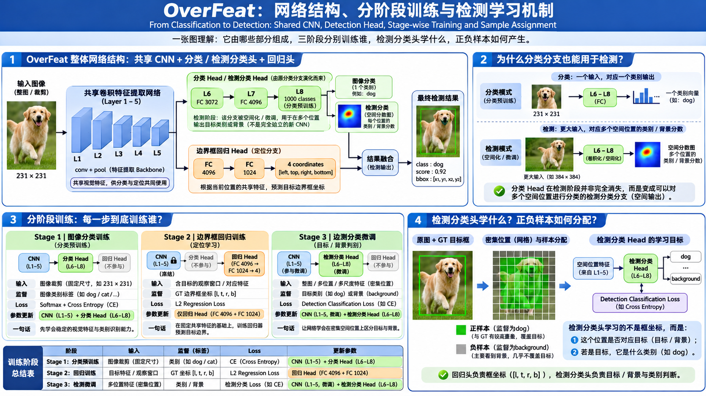

OverFeat 算法原理研究笔记
Integrated Recognition, Localization and Detection using Convolutional Networks · Sermanet et al.
将图像分类拓展为密集的类别预测与边界预测：在整张图上寻找目标，并用多个位置的结果确定它的范围。
从分类网络到目标定位
先看改变了哪些计算，再深入各个算法。
OverFeat 的主要工作可以拆成两件事：先在整张图上高效获得大量局部预测，再让每个局部视野预测目标真正的边界。由于不同窗口会对同一个目标反复作答，最后还需要把它们组织成可靠的检测结果。
共享卷积
相邻窗口复用同一张特征图，密集搜索由此变得可行。
细步距与多尺度
更多观察位置与目标尺寸，减少视野对齐误差。
回归与融合
学习目标边界，汇合各窗口对同一物体的判断。

核心算法原理
沿着实际计算依赖关系，逐步理解密集预测与边界定位。
1.1 共享卷积：怎样高效地扫描整张图？
为什么两个高度重叠的窗口，要分别重复提取相同区域的特征？
朴素滑窗会依次裁剪每个窗口并调用一次分类网络。两个窗口重叠得越多，重复的卷积计算越多。OverFeat 将卷积直接应用于较大的图像，在同一张特征图上生成各个观察位置的输出。
关键还在网络尾部。固定裁剪时，分类器通常给出一个类别向量；应用到较大特征图时，原先连接固定空间块的全连接运算可以改写为卷积，在多个位置重复使用同一组权重。
1.2 Offset Max Pooling：让预测位置更密
共享卷积能计算许多位置，但逐层下采样后，预测网格可能相距很远。
在论文展示的设置中，累积空间步距为 36 个输入像素。当目标刚好落在两个相邻观察位置之间，分类视野与目标不够对齐。OverFeat 借鉴已有的细步距扫描思想，将最后的 3×3 池化分别从九种空间偏移执行，再交错还原输出，等效步距由 36 变为 12 个输入像素。
当前偏移从索引 0 开始，每 3 个数执行一次 max pooling。
Δ∈{0,1,2} 表示池化起始偏移；k 是窗口序号。每组池化结果继续经过同一分类器，最终按原空间顺序交织。
注意区分两件事：普通池化的步长仍为 3；通过对三个起始相位分别运行，把被单一起始位置忽略的中间位置补回来。这相当于更细地移动分类器观察视野。
1.3 多尺度：让同一观察窗口覆盖不同大小的目标
位置扫得再密，也需要让目标尺寸与网络观察视野匹配。
OverFeat 在多个图像尺度上运行共享卷积网络。图像缩小后，同一个网络感受野对应原图中更大的区域；图像放大则适合观察较小目标。不同尺度分别生成分类响应图和回归结果，再投回原图统一处理。
s 为当前图像相对原图的缩放比例。示例：原图缩小到 0.5 倍后，当前尺度中的 x=100 对应原图 x=200。
1.4 边界回归：从局部视野预测完整物体
一个窗口可能只看到狗头，却已经对“狗”给出高分。如何从局部证据推断整只狗的位置？
OverFeat 使用共享卷积特征，并训练一个独立的回归网络来输出边界框四条边。回归网络接收第五层池化后的局部特征，经过 4096 → 1024 → 4 的回归层，得到左、上、右、下四个边界坐标。
[64, 28, 272, 205]
假设窗口左上角为 (x₀,y₀)，图像中的 GT 为 (l*,t*,r*,b*)，则用于该窗口的目标是：
局部框坐标可能延伸到观察窗口外；这是回归完整目标边界的意义。
定位时，网络对每个观察位置给出回归预测，并用该位置的坐标偏移将其转换回所在尺度的图像坐标。原论文同时研究了共享四维回归器与分类别回归器；实际竞赛系统采用共享回归器（SCR）。
1.5 框融合：多个视野共同指向同一物体
如果不同位置都预测到了同一只狗，为什么这些重复框反而有价值？
多尺度密集扫描会生成大量相近边界框。OverFeat 使用贪心合并：按框的空间关系寻找最匹配的框对，合并坐标，并累积关联窗口的分类分数。多个独立视野若稳定地指向同一位置，便形成更强的检测证据。
坐标平均与分类分数累积是论文中的关键操作。贪心合并在满足匹配条件时迭代执行。
完整训练算法
从数据与 GT 出发，梳理前向预测、监督计算和参数更新。
OverFeat 先训练分类网络，再利用学到的特征训练边界回归网络；检测任务进一步通过带背景的空间分类训练增强检测能力。三个训练目标不同，参数与监督也各有侧重。
箭头表示主要研究顺序与特征继承；检测分类微调围绕已学到的分类特征展开，定位回归器单独承担边界预测。
2.1 分类训练：建立位置共享的视觉特征
训练样本是固定大小的图像裁剪与其类别标签。分类器输出 C 个类别的分数，经 Softmax 得到类别概率，再用交叉熵衡量对正确类别的预测程度。
z 为类别分数，y 为 GT 类别；如果真实类别 dog 的概率为 0.8，则损失为 −log(0.8)≈0.223。
训练完成后得到一组可复用的卷积特征提取权重，以及能够在给定视野中判断类别的分类器。整图扫描使用同一组权重处理所有空间位置。
2.2 定位回归训练：教网络输出真实边界
回归训练以图像中的真实物体框为监督，先把 GT 根据当前观察位置转换到窗口局部坐标；网络预测四条边，再比较坐标误差。物体与当前视野重叠不足 50% 的位置不参与该回归训练。
GT：t = [64, 28, 272, 205]
Lreg = Σᵢ (ŷᵢ−tᵢ)²
= 4 + 25 + 16 + 9 = 54
教学数值；论文采用 L2 回归损失。
训练回归器，保持共享前端固定
误差对四个预测坐标提供梯度，再沿回归层反向传播，更新回归器参数。共享特征层沿用已训练好的分类权重。
特征层：冻结 回归层：更新
论文设计了分类别回归输出（PCR），也研究了类别共享的四维回归输出（SCR）。这种选择改变的是最后的回归参数是否按类别分开；两种形式都以四条边的坐标误差作为监督。
2.3 检测训练：把背景位置纳入分类
在检测图像中，大量位置对应背景。检测分类网络按照空间位置接受类别监督，让目标位置与背景位置都参与学习。论文采用在线负样本选择：在训练过程中选取随机背景位置或容易误判的背景位置进行优化。
这一步仍然属于分类监督：损失衡量每个参与位置的类别预测是否正确。难负例更能暴露模型的背景误判，有利于改善检测场景中的误检问题。分类特征从已有的分类网络初始化，再进行检测任务微调。
| 阶段 | 预测 | 监督 | Loss | 更新重点 |
|---|---|---|---|---|
| 分类 | 类别分数 | 图像类别 | 交叉熵 | 卷积特征 + 分类层 |
| 定位回归 | 四条边坐标 | 各窗口局部 GT 框 | L2 坐标误差 | 回归层；共享特征固定 |
| 检测分类 | 各位置类别/背景 | 空间标签与在线负例 | 分类损失 | 检测分类相关参数及特征微调 |
完整推理算法
用一张新图像，将前面的机制完整连接起来。
训练完成后，分类器负责回答“这个位置是什么”，回归器负责回答“这个目标的边界在哪里”。两个分支复用前端特征，并在多个位置和尺度上协同产生结果。
每个位置输出类别分数
例：位置 (i,j)，dog = 0.82
同一位置输出四条边
例：局部边界 [60,25,260,202]
3.1 一次坐标恢复的具体例子
假设当前尺度是原图的 0.5 倍，某观察窗口的左上角为 (40,30)，回归器给出局部边界 [10,20,90,100]。
= [50, 50, 130, 130]
② 原图坐标 = [50, 50, 130, 130] / 0.5
= [100, 100, 260, 260]
此时得到一个位于原图中的候选框。其他观察窗口执行相同计算，所有候选框与分类证据进入合并阶段。
3.2 训练与推理的执行区别
用标签塑造预测能力
读取类别和 GT 边界，构造各位置监督；分类损失与回归损失分别优化对应参数。
用学到的权重生成预测
构建多尺度图像，计算密集类别分数和预测边界，恢复到原图坐标，进行框融合。
用一张机制表记住 OverFeat
关注算法中的因果关系与可迁移思想。
| 遇到的问题 | 采用的机制 | 形成的能力 |
|---|---|---|
| 相邻窗口重复计算 | 全图共享卷积 | 高效生成空间类别响应 |
| 输出空间位置过稀 | Offset Max Pooling | 更细密的观察位置 |
| 物体尺寸不同 | 多尺度扫描 | 适应不同目标大小 |
| 局部识别难以直接定位完整目标 | 边界回归 + L2 监督 | 由局部特征预测完整边界 |
| 多个视野反复检测同一目标 | 贪心框融合 + 证据累积 | 整合重复位置预测 |
| 背景容易产生误检 | 空间检测训练 + 在线负样本 | 更好地区分目标与背景 |
OverFeat 是密集滑窗路线的重要代表：它将分类 CNN 的空间卷积计算组织成可用于目标检测的系统，并把类别判断、边界预测与多尺度证据结合起来。同期的 R-CNN 则选择先生成候选区域、再对候选进行识别，两者展示了目标检测中不同的搜索思路。
Pierre Sermanet et al., OverFeat: Integrated Recognition, Localization and Detection using Convolutional Networks, arXiv:1312.6229 (2013；v4 更新于 2014-02-24)。在线论文全文 · 论文信息
对应论文 §3.3–3.5（共享卷积、细步距、尺度扫描）、§4.1–4.3（回归与合并）、§5（检测训练）。交互图中的具体数值与物体造型为教学示例，机制与参数以原论文为依据。